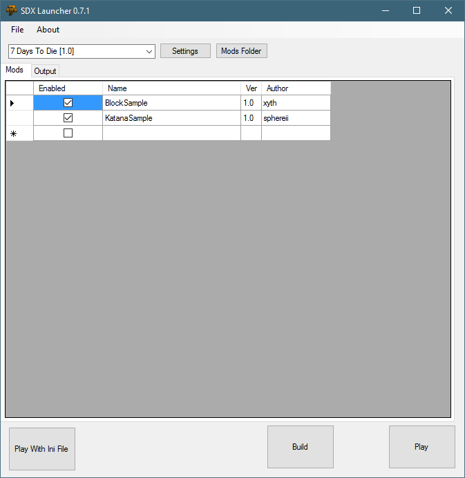

The Mods Folder is where your SDX Mods will be located at. This is the Mod's code, resources, and other XML files that are needed.
Click on the "Mods Folder" button. This will open an Explorer window under "C:\SDXModding\SDX0.7.1\Targets\7DaysToDie\Mods"

Mods Folder in Explorer

Created with the Personal Edition of HelpNDoc: Free EBook and documentation generator